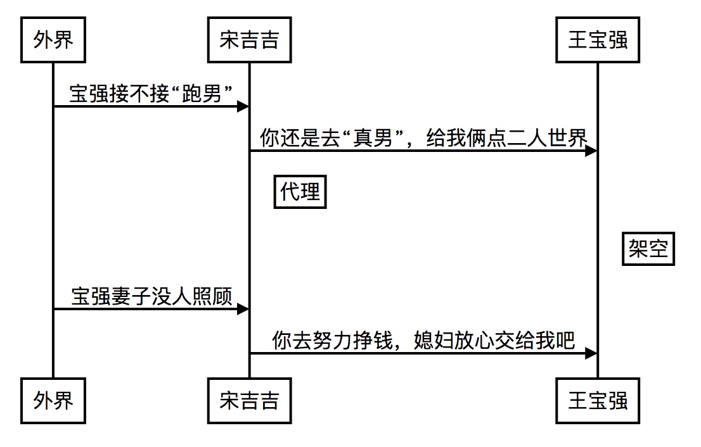
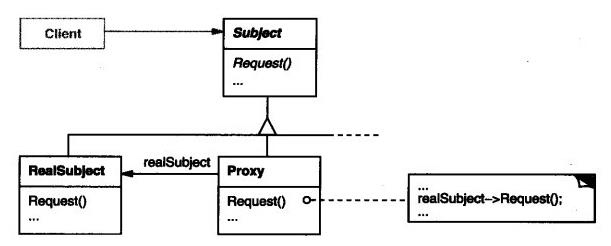
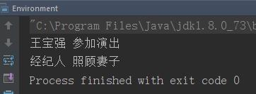

一. 你缺经纪人吗
这几天王宝强妻子出轨经纪人事件惹尽了眼球，“你缺经纪人吗” 一下子成为打招呼必备热词。在紧跟“潮流”之前我们有必要了解下，经纪人都负责为宝强做哪些事呢？
- 为宝强安排档期
- 为宝强做公关
- 为宝强照顾家庭
可以看到，除了吃喝拉撒睡，宝强的许多行为都被经纪人 架空 了：

可以看出，经纪人会将外界给宝强的信息进行拦截、处理，这就是我们常说的代理模式。
二.代理模式
定义
为其他对象提供一种代理以控制对这个对象的访问。
（Provide asurrogate or placeholder for another object to control access to it. ）
经典的UML图

在图中，代理与被代理实现同一个接口，即拥有共同的行为，同时代理中持有一个被代理的引用。这样当不想直接访问某个对象时，可以通过代理来间接访问。
以宝强和经纪人举个栗子
1.经纪人和明星在一些行为上有共同点，所以定义一个共有接口：
/**
* 明星接口，定义了一些明星的行为
* Created by zhangshixin on 8/19/2016.
*/
public interface IStar {
/**
* 参加节目
*/
void attendTheShow();
/**
* 照顾妻子
*/
void loveWife();
//...
}
2.接着是明星类，实现了明星接口的行为：
/**
* 明星实体类
* Created by zhangshixin on 8/19/2016.
*/
public class Star implements IStar {
private String mName;
public Star(String name) {
mName = name;
}
@Override
public void attendTheShow() {
System.out.print( this.mName + " 参加演出 \n");
}
@Override
public void loveWife() {
System.out.print(this.mName + " 照顾了妻子");
}
}
3.经纪人要代表明星，就需要和明星有同样的行为，同时持有明星的引用：
/**
* 经纪人
* Created by zhangshixin on 8/19/2016.
*/
public class Agent implements IStar {
/**
* 经纪人可以代表一个明星做一些决定
*/
IStar mIStar;
boolean mIsHappy;
public Agent(IStar IStar) {
mIStar = IStar;
}
/**
* 代理可以在一定情况下拦截、修改被代理对象的行为，这里设置一个 “心情”的状态值
* @param IStar
* @param isHappy
*/
public Agent(IStar IStar, boolean isHappy) {
mIStar = IStar;
mIsHappy = isHappy;
}
@Override
public void attendTheShow() {
mIStar.attendTheShow();
}
@Override
public void loveWife() {
if (mIsHappy) {
mIStar.loveWife();
} else {
//当经纪人心情不好时，就会干坏事
System.out.print("经纪人 照顾妻子");
}
}
}
4.调用方如何通过经纪人访问明星呢：
/**
* 外界环境，一般都是通过经纪人来接触明星
* Created by zhangshixin on 8/19/2016.
*/
public class Environment {
public static void main(String[] args) {
//王宝强，一位可爱、淳朴的明星，最早看的是他的《天下无贼》和《盲井》
Star baoqiang = new Star("王宝强");
//有个经纪人叫宋吉吉
Agent songJJ = new Agent(baoqiang, false);
songJJ.attendTheShow();
songJJ.loveWife();
}
}
5.运行结果

6.可以看到 代理 的主要作用是 方法增强，它可以在不“惊动”被代理类的情况下修改被代理类的行为。这有助于系统解耦。我们这里代理类和被代理类都是自己亲自敲好的，属于静态代理。
三.总结
某个类能满足要求时，你当然可以直接用它，但当它不能满足要求，要扩展功能，根据 开闭原则 你又不能修改实现类代码，这时就用到了 代理 。
代理模式共分为 2 种：
- 静态代理
- 动态代理
静态代理需要我们编码时就确定代理、被代理对象关系，如果有大量的或者运行时才确定的代理行为，静态代理就不太合适了；
而在实际应用中 动态代理 更为常用，它可以使用反射，通过参数和代理方法自动生成代理的代码。
转载自：http://blog.csdn.net/u011240877/article/details/52264283